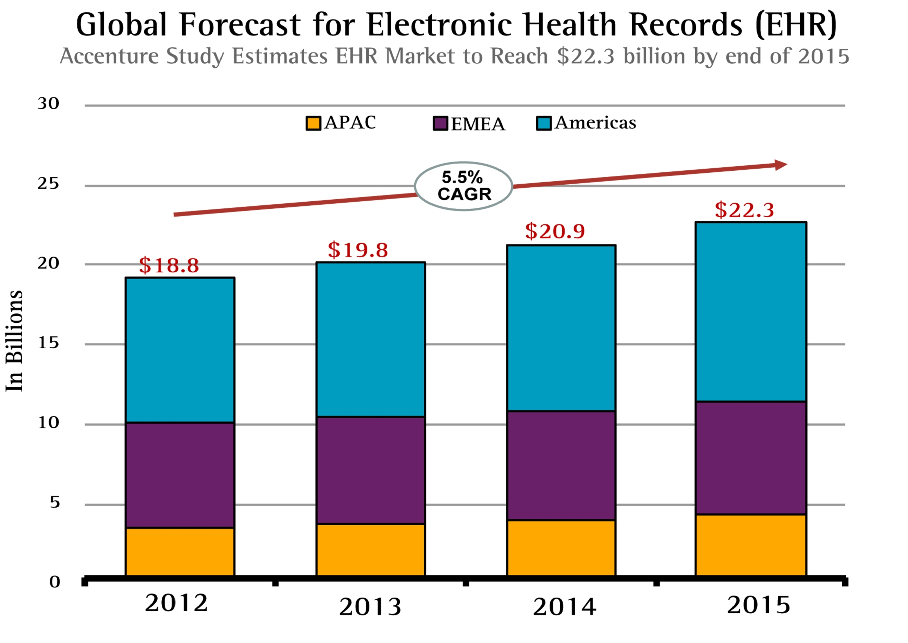

The effectiveness of Electronic Health Records in replacing paper based records has started the digitisation of healthcare which in turn has created a new market for the global healthcare industry. According to Accenture Research the global EHR market was forecasted to grow from $18.8 billion in 2012 to $22.3 billion in 2015.

Source: https://www.accenture.com/us-en/insight-getting-emr-back-fast-lane-summary
In the UK the NHS’s Five Year Forward View sets out a new vision for the future of the NHS and its models of care, and describes “exploiting” the information revolution by utilising Electronic Health Records so that patient records are largely paperless. Patients should be granted full access to view them and be able to write to them.
According to the Project Brief, our project with the NHS and Open Care Plan Community aims to implement an Electronic Care Plan capable of storing health records, tracking medications, adding consultation notes, and managing appointments with clinicians. Currently, a range of existing Care Plan structures and formats have evolved for local needs over many years, many of which still reside as paper documentation in patient homes, and community accommodation. Reaching a safe and effective position where an open, interoperable digital care plan offers meaningful use to all practitioners and people, irrespective of care pathway, is a key enabler for delivering on the NHS 5 Year Forward View.
Our client is Paul Fleming, the community lead for the Open Care Plan Community. ‘What’s The Plan’ and the Open Care Plan Community aims to enable people, carers and care providers to view and interact with their agreed Care Plans electronically, and aims to deploy a mechanism that is sympathetic to the needs of the citizen, their family, carers and the range of health and social care professions. The community is hosted on Code4Health which is an initiative supported by NHS England and NHS Digital to encourage the use of digital tools and technology to deliver safe, high quality, efficient and compassionate care.
"The inspiration came from one patient’s challenging journey across multiple boroughs, hospitals and specialist providers over 24 hours, where having a care plan scribbled in their carer’s diary proved to be the only available record of what the consultant had earlier set out. It was decided that in the 21st Century this wasn’t acceptable and things must change."
According to the Background & Context and Inspiration sections, we can see that patients have to deal with roughly written out paper-based care plans. As a result, the status quo provides many potential problems, such as costs of maintaining this paperwork, limited collaboration between patients and carers, and disruptions caused by missing paperwork.
Therefore, our challenge is to develop an Electronic Care Plan mobile app that enables people, carers and care providers to view and interact with their agreed Care Plans electronically.
There are a three main challenges that we must address to be able to produce an effective Proof of Concept prototype for an Electronic Care Plan:
• The first challenge is identifying the best approach for mobile development. We must decide on whether to use a mobile-first or API-first approach. Then we must identify which frontend and backend technologies can help us accomplish that task. We plan to find the solution to this by undertaking a lot of research on potential frontend and backend frameworks, and choosing a combination of both that allows for a secure and clean approach for mobile development.
• The second challenge concerns making the app interoperable or “open” with other healthcare systems. To attempt to solve this challenge, we must research on how EHR systems are developed by existing healthcare providers to support interoperability. One identified solution involved openEHR which is a community working on converting physical health data into an electronic form, but the main difference being that openEHR aims to ensure universal interoperability among all forms of healthcare data. The next task would involve researching HOW we can accomplish this.
• The last challenge will be to find existing plugins for accomplishing some of our requirements. This concerns plugins such as an Export to PDF plugin, or a Date Picker Plugin (for managing appointment dates). This challenge can be solved by researching the plugins, that apply to the chosen frameworks, that can perform these features. By using plugins we save a lot of time by not having to code some features ourselves.
Furthermore, there are five key features of the app that are required to be implemented for our project to be considered a success:
• Patients can manage their care plan information as well as their medical records.
• Patients can store medication information and be reminded to take them when required.
• Patients can write notes from consultations.
• Patients can view and add appointments made with their doctor.
• Patients can export key medical information as a PDF.
If all of the challenges are met and key features are implemented, according to the Project Requirements and Project Brief, we can consider the project to be successful .